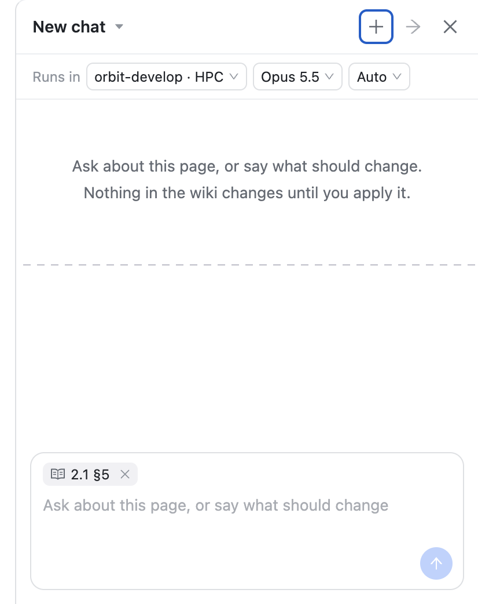
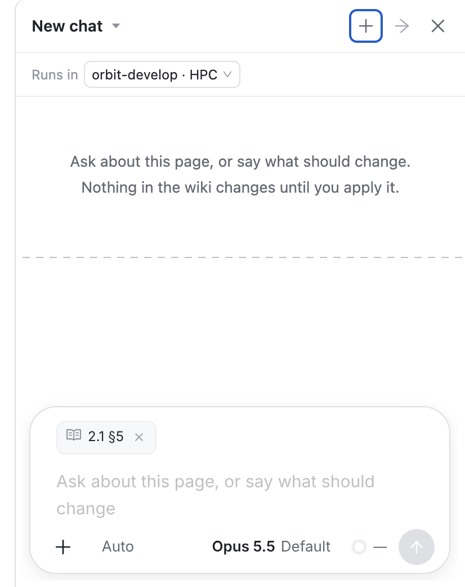
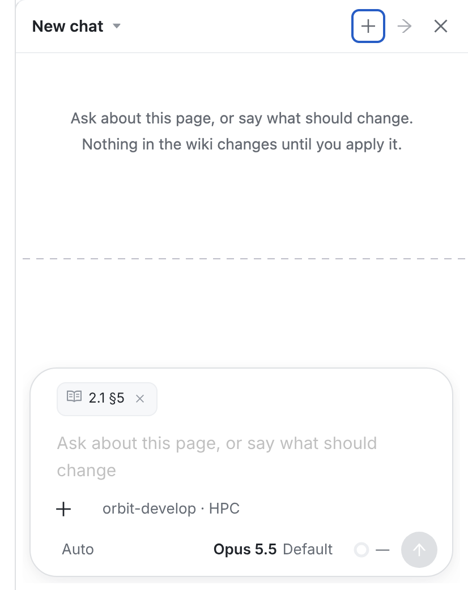
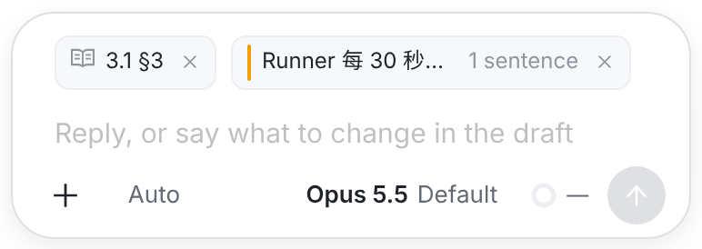
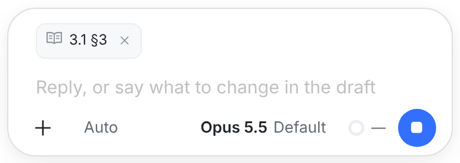
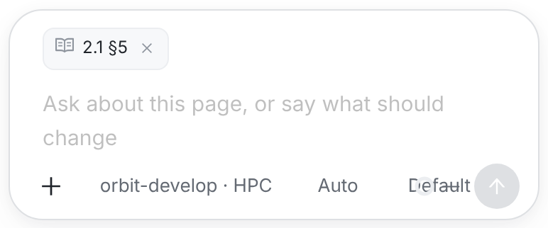
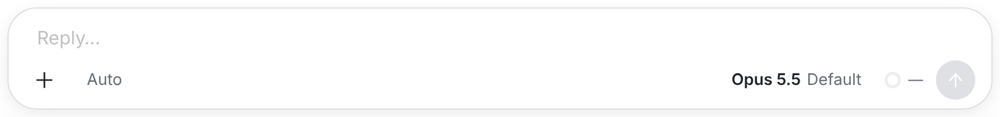

你的要求：「Chat 的 UI 设计，可以复用普通 Session 的 composer」。① 是你发来的生产截图。② ③ ④ ⑤ 的输入框是当前 main（2521b7883）session 页真实的 composer（WorkspaceView），限制到面板宽 374 px 拍的。页面附件、选区附件和 workspace 小块是用 composer 自己的样式类画进去的；面板头和空白区取自你的截图。只换输入框，别的都不动。

Runs in 一行有三个选择器：workspace、模型、模式。输入框是面板自己的短输入框：只有附件块、文字和发送，没有图片和文件、斜杠命令、用量，运行中也只有 Stop。
Runs in 只留 workspace，并且只在新聊天出现，发出第一句后就收起。模型和模式回到输入框工具栏，位置和 session 页一样。输入框就是 session 页那一个：+ 加图片和文件，Auto，Opus 5.5 · Default，用量圈，发送。
Runs in 整行，workspace 也进工具栏，放在 + 后面，和 session 页给新会话的放法一样。面板只有 374 px 宽，一行放不下，所以工具栏折成两行（见 ⑥）。
×。规则照旧：发送时定格，叉掉的就不发。占位文字用 wiki 的那句 Reply, or say what to change in the draft。
Stop。这时再打字，按 session 页的规则排队或插话；现在的面板只能等这一轮结束。
Default 压在用量圈上。session 页够宽，所以没有这个问题。
+、↗、✕）、对话区（本来就是 session 页的对话）、改动卡、圆按钮的四种状态，以及页面与选区附件的规则。也没有新的英文文案：占位文字沿用 wiki 的两句。WorkspaceView.tsx：把 composer 抽成独立组件，做法同 C7 抽实时流，session 页的行为和测试不变；WikiChatPanel.tsx：用它替换现在的短输入框，页面与选区附件接进附件行；index.css：面板宽度下的工具栏；POST /api/wiki/spaces/:id/chats）要补上附件。Runs in，只放 workspace，只在新聊天出现。ComposerView）。C11 现在用的是它自己的短输入框（WikiChatComposer）。web 与 iOS 一致是这个项目的验收要求之一。